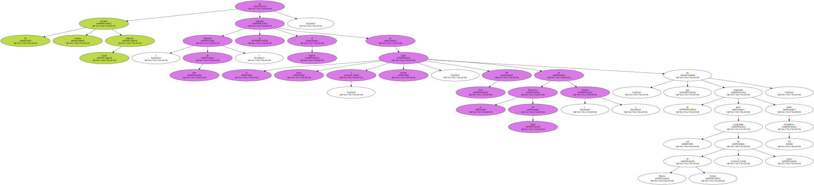
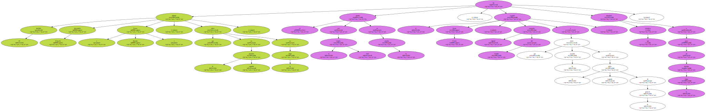
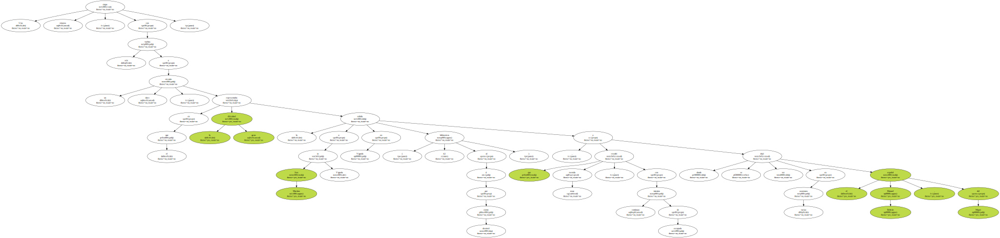
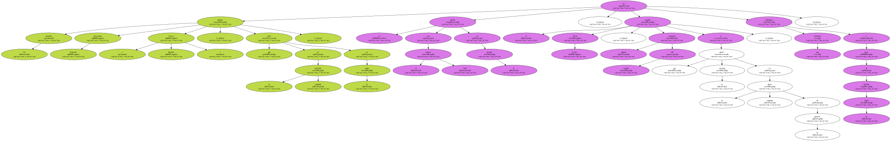
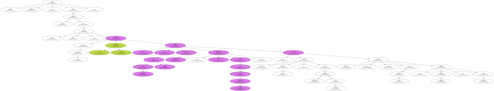
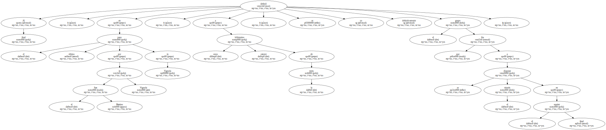
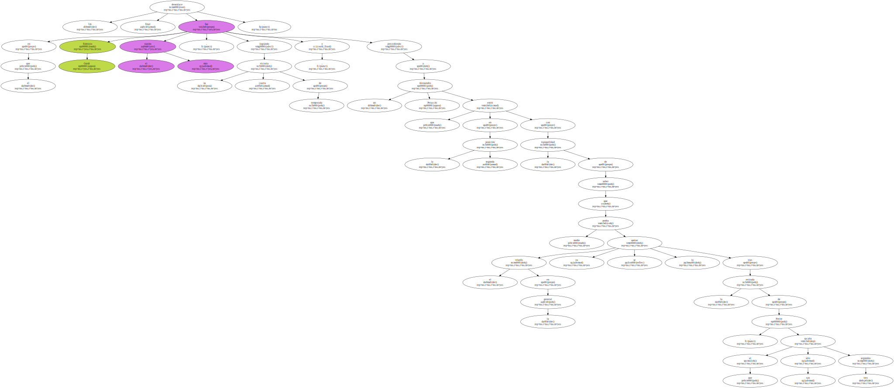

El corredor italiano Fabrizio Guidi ( Francaise de Jeux ) se ha impuesto al esprint en la cuarta , y última , etapa del Giro de la Provincia de Lucca ( Toscana ) , que se ha disputado entre las localidades de Marina di Carrara y Lucca , sobre 152 kilómetros.
El corredor italiano Fabrizio Guidi ( Francaise de Jeux ) se ha impuesto al esprint en la cuarta , y última , etapa del Giro de la Provincia de Lucca ( Toscana ) , que se ha disputado entre las localidades de Marina di Carrara y Lucca , sobre 152 kilómetros.
El corredor italiano Fabrizio Guidi ( Francaise de Jeux ) se ha impuesto al esprint en la cuarta , y última , etapa del Giro de la Provincia de Lucca ( Toscana ) , que se ha disputado entre las localidades de Marina di Carrara y Lucca , sobre 152 kilómetros.
El corredor italiano Fabrizio Guidi ( Francaise de Jeux ) se ha impuesto al esprint en la cuarta , y última , etapa del Giro de la Provincia de Lucca ( Toscana ) , que se ha disputado entre las localidades de Marina di Carrara y Lucca , sobre 152 kilómetros.

El también italiano Alessandro Petacchi ( Fassa Bortolo ) , que entró en la segunda posición en la etapa , se ha alzado con el triunfo final en la prueba , mientras que el español Oscar Freire , vigente campeón del mundo y que inició la jornada en la segunda plaza de la general , abandonó a poco de iniciada la etapa.
Una sinuosa etapa , con seis vueltas a un duro circuito , en el que la gran dificultad representaba la subida a San Martino in Vignola en Vignola ( 4,1 kilómetros al 4 por ciento desnivel ) , que resultó muy movida , con continuos intentos de escapada y donde se dejó ver en varias ocasiones el español Manuel Beltrán , del Mapei.
Una sinuosa etapa , con seis vueltas a un duro circuito , en el que la gran dificultad representaba la subida a San Martino in Vignola en Vignola ( 4,1 kilómetros al 4 por ciento desnivel ) , que resultó muy movida , con continuos intentos de escapada y donde se dejó ver en varias ocasiones el español Manuel Beltrán , del Mapei.
Al final , en el último paso por el San Martino in Vignola in Vignola , a unos catorce kilómetros de la meta , se definió ya definitivamente el grupo que se iba a disputar el triunfo en el esprint final.
Un desenlace final en el que Fabrizio Guidi fue el más rápido , logrando su cuarta victoria de temporada , y precediendo a un Alessandro Petacchi que entró en la segunda posición con la tranquilidad de saber que el triunfo en la general ya nadie se lo podía quitar tras la retirada de Freire , al que tan sólo sacaba tres segundos.
